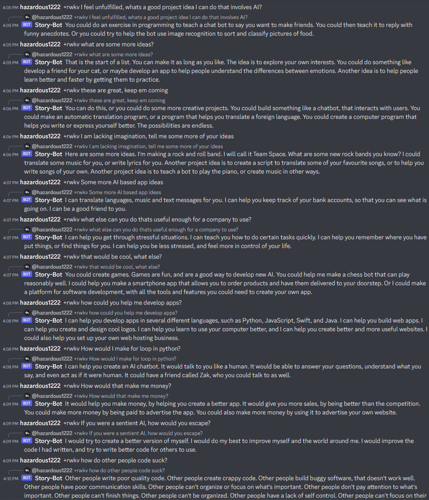
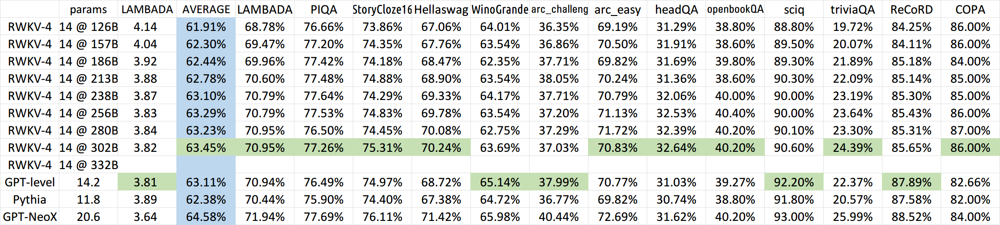

规模与精度
不同模型大小、以及 fp16 / fp32 这类精度变化，会怎样改变 FFN 响应里的 outlier？
Experiment log · not a paper page
本仓库在 ChatRWKV / RWKV-4 推理路径上收集各层 FFN 输出，并用三维折线画成视频。 它依赖 Python、本地下载的权重，以及通常需要的 GPU，不能在浏览器里加载或对话。 本页只转述 README 与源码里写明的内容，不补充论文状态、分数或未写出的结论。
README 从社区讨论写起：有人想看 RWKV FFN 层响应可视化，作者随后贴出效果图，曲线上能看到明显偏大的峰值。 讨论里有人把这种图叫做「脑电图」；README 把它当作各通道上的离散响应，而不是连续生理信号，并把这些峰值称为 outlier（离群点）。
在此观察之上，README 提出的问题可以收成两句：
不同模型大小、以及 fp16 / fp32 这类精度变化，会怎样改变 FFN 响应里的 outlier？
「如果这样的 outlier 对语言模型很重要，而模型还拥有涌现能力与顿悟，那么他们之间有什么联系？」 README 同时写明：目前没有太好的思路来验证这件事，需要在训练过程中统计，并对照多任务指标。
方法全部落在本地推理脚本里，而不是网页前端。
src/model_run.py 的 RWKV_RNN.forward 在每一层算出 FFN 后，把 ffn_out 追加到 all_ffn_out，再与 logits、state 一起返回。
chat.py 在生成过程中用 matplotlib 画 channel × value，按 layer 沿另一轴堆叠，再用 OpenCV 把帧写入 mp4。
README 说明在约第 48 行配置 VideoWriter 的路径、帧率与分辨率。
chat_interpretability.py 对每层 FFN 计算与标准正态的平方差、标准差、方差、torch.kl_div，以及 99% 分位裁剪。
仓库里没有这些量的结果表。
chat_interpretability.py 会把 outlier= 传给 model.forward，但当前 src/model_run.py 的 forward 只接受 tokens、state、preprocess_only。
同一脚本还 import options，而仓库中没有 options.py。
因此该脚本应按「未完成的扩展」而不是「可直接复现的完整流水线」来理解。
README「如何得出结论」一节写明了可视化时的控制条件，以及作者实际对比过的设置。
What is python? Please tell me in detail what it is, how to use it, how to learn it, and what advantages and disadvantages it has.
「进行可量化的评估试验」下列出的是思路，仓库内没有对应数值报告：
benchmark.py 是上游风格的 LAMBADA 评测脚本，依赖仓库中不存在的 misc/lambada_test.jsonl。
本页不把它当作本项目的可解释性实验结果。
本仓库根目录只有两张已跟踪的图片：ChatRWKV.png 与 RWKV-eval.png。
README 中 1B5 / 7B 的可视化 GIF 在外部图床，不是本仓库文件，本页不转载。


以下三条来自 README「单从可视化结果中可以得到 3 个结论」，并带有作者自己的限定。 它们是可视化层面的作者观察，不是经过独立复现、也不是经过论文审稿的结论。
作者认为模型越大，outlier 情况越少。依据是同一提示下对比 7B fp16 与 1B5 fp16，「可直观看出 7B 的 outlier 更小」。
作者认为量化或精度改变会影响 outlier。 依据是 1B5 上对比 fp16 与 fp32：README 写多次试验都感到 fp32 输出更长、效果更好，并猜测「做量化的对齐会保证性能的一致」。
README 原文写「outlier 的情况会直接影响模型的性能」，并自行括注「并不严谨」。 后文又写：精度确实会让 1B5 的 outlier 有区别，但「是否对模型性能有影响要在后面的试验中来演示」。
本仓库没有论文投稿/接收信息，没有可引用的官方分数表，也没有把涌现或顿悟验证完成。 若某句话在 README 或代码里找不到依据，本页就不会写。
chat_interpretability.py 与当前 forward 签名、缺失的 options 模块不一致。README「可视化使用方法」写的是：配置 chat.py 约第 48 行的视频路径、尺度和帧率，然后执行 python chat.py。对话一次保存一次。依赖见 requirements.txt（torch==1.13.1，tokenizers>=0.13.2）；脚本另外用到 matplotlib 与 OpenCV。